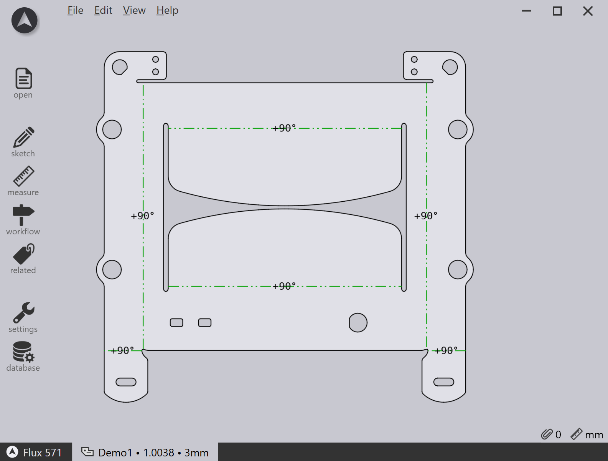
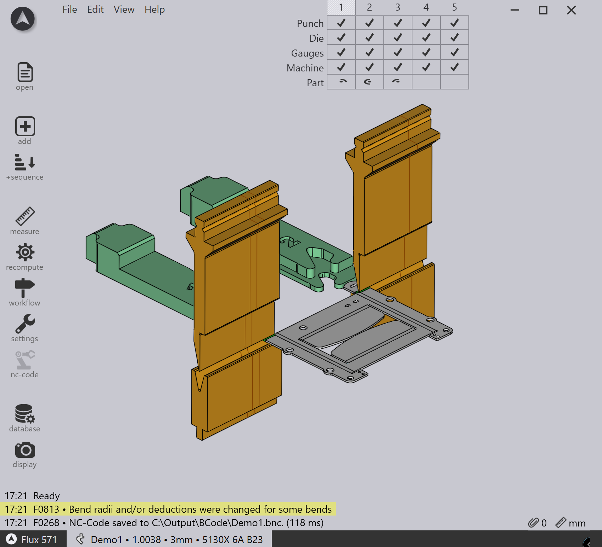
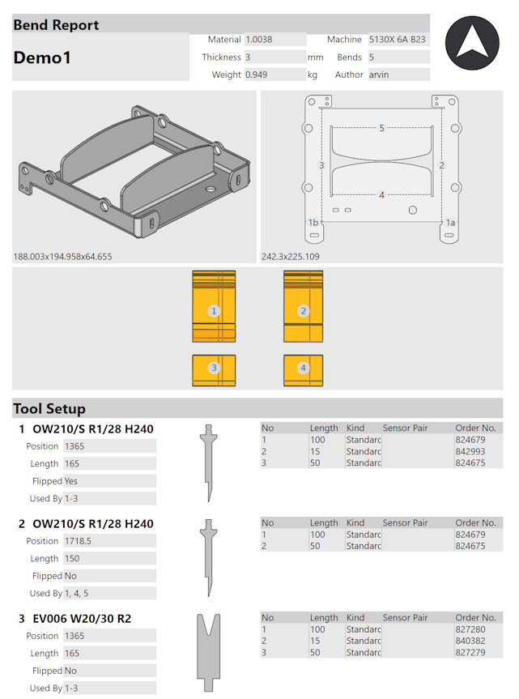
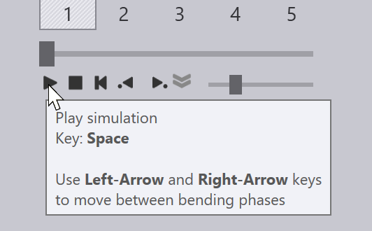
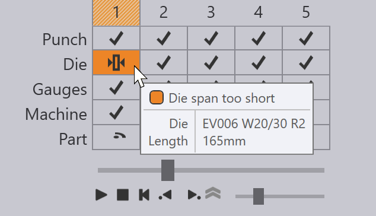
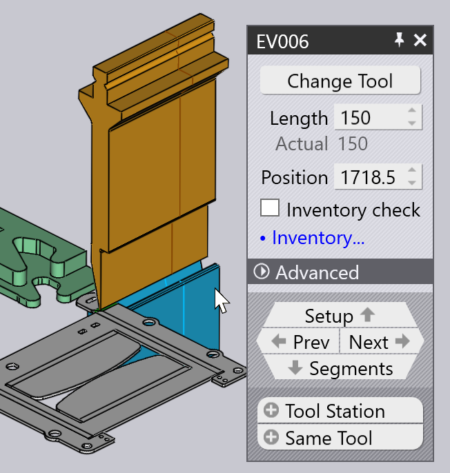
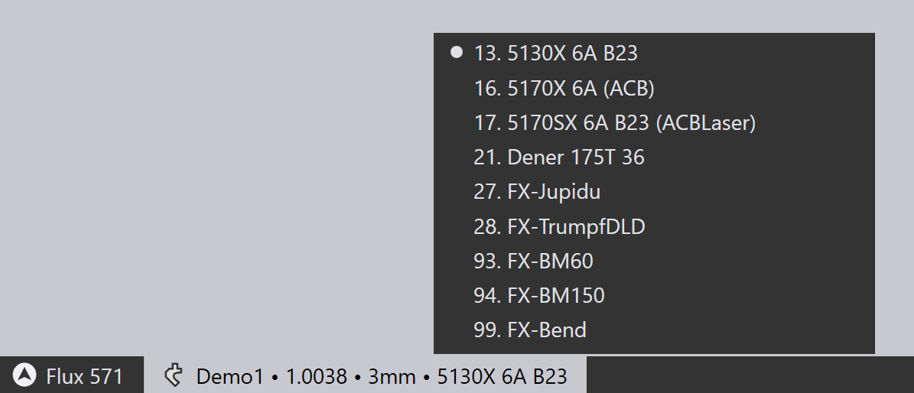
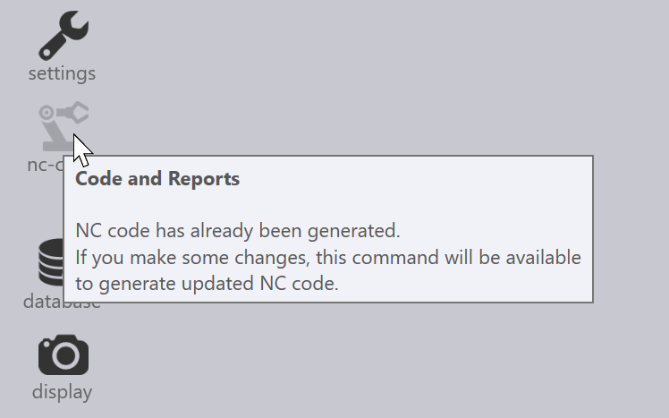

Vytvoření parametrů ohýbání
Pomocí modulu Ohýbání můžete vytvořit data technologie ohýbání pro plechový díl. Tento proces se také nazývá přípravou dílu pro ohýbání. Předpokládejme, že jste již nainstalovali stroj, nakonfigurovali stav nástrojů a importovali CAD díl (2D nebo 3D):

Přepnutí na Ohýbání CAM
Nyní lze díl připravit k ohýbání pouhým stisknutím klávesy B. Díl je opracován pomocí výchozího ohýbacího lisu, kterým je ohraňovací lis, který jste naposledy použili. Pořadí nástrojů, nastavení ohybu a polohy dorážení jsou vypočítány a výsledek by měl vypadat takto:

Pokud nejsou žádné chyby, NC program (a případně nastavovací list) pro díl se také vygenerují a uloží do výstupní složky, která je nastavena pro tento stroj. Zde je část z typického listu s nastavením dílu[1] (známý také jako report ohýbání).

| Viz také panel Workflow, který lze otevřít stisknutím klávesy W. To poskytuje větší kontrolu nad vytvářením dat technologie ohýbání a možnosti trasování dílu pomocí laserového CAM nebo optimálního rozmístění. |
Další operace
Zde je stručný přehled některých operací, které můžete provést, jakmile je díl připraven k ohýbání.
-
Pokud kliknete na Spacebar, spustí se simulace ohýbání. K zahájení, zastavení nebo přetočení simulace můžete také použít ovládací prvky simulace v Navigátoru ohýbání:

-
Pokud se vyskytnou nějaká varování nebo chyby, zobrazí se v Navigátoru ohýbání a můžete si je prohlédnout a vyřešit kliknutím na příslušné buňky:

-
Nástroje pro ohýbání (razníky a matrice), nastavení dorážení nebo nastavení měření úhlu můžete upravit pouhým kliknutím přímo na daný objekt v zobrazení simulace:

-
Stroj můžete změnit kliknutím na název stroje v záložce pod dílem a výběrem jiného stroje:

-
Klikněte na ikonu Nastavení na panelu nástrojů vlevo, abyste upravili další nastavení pro každý ohyb (nebo abyste upravili výchozí nastavení používané pro tento ohýbací stroj nebo pro celou aplikaci TecZone Bend).
-
Kliknutím na ikonu Zobrazení na levém panelu nástrojů můžete upravit zobrazení stroje – můžete zapnout nebo vypnout zobrazení dalších součástí, jako je kolejnice matrice, ohýbací nosník, podpůrný systém dorazového palce. Můžete také nastavit průhlednost různých součástí.
Pokud je řešení ohybu vytvořeno bez chyb, NC program dílu a nastavovací list pro ohýbání se generují automaticky. Na stránce nastavení Bend Outputs můžete nastavit, zda se má automaticky generovat NC program dílu a nastavovací list, a také nakonfigurovat cíl pro tyto výstupy a formát reportů. Pokud byl vygenerován kód, tlačítko nc-kód v levém panelu nástrojů je šedé:

Jakmile provedete jakékoli změny v dílu, toto tlačítko se znovu aktivuje a můžete znovu vygenerovat NC program kliknutím na tuto ikonu (nebo stisknutím klávesy C).